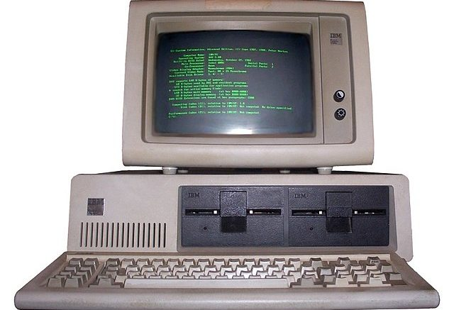

Way back in the day, computers were HUGE. Like, seriously, they could fill a whole room! People built them to help solve really hard math problems, not for games or fun stuff like today. The first computers were super slow and could only work with numbers. No screens, no cool graphics, just pure number crunching!
Here’s what some of those early computers looked like. Lots of switches, lights, and big machines that needed smart people to use them!
